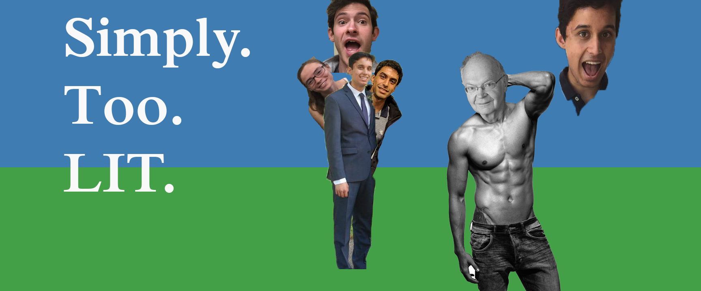

LIT CREW
They were a band of disorganized, moderately LIT individuals until one Nishan had the common sense to bring them all together. The result? The best groupchat/Donald Knuth fan club Facebook has ever seen.
They were a band of disorganized, moderately LIT individuals until one Nishan had the common sense to bring them all together. The result? The best groupchat/Donald Knuth fan club Facebook has ever seen.